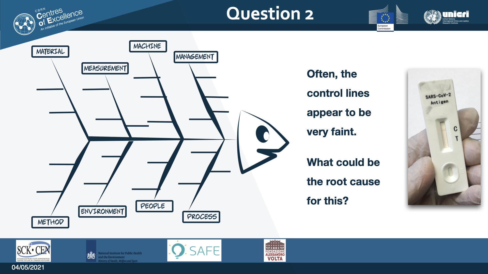

Chapter 7 Question 2


This question goes deeper in the issue with faint control line. This is an open question where several possible root causes are listed as examples.
7.1 Module V - Workflow
7.1.1 Content
| Length | 15 minutes |
| Learning goals | The participants can: Design a proper and safe workflow in a routine testing facility. |
| Summary | Proper registration procedures are explained to avoid mis-diagnosis. Biosafety work procedures for the protection of staff, clients and environment, which also include safe discard of waste. Examples of crowd control methods are shown to improve the testing-flow and a safe environment for the clients and staff. |
| Tools & setup | Ask participants to turn of (sound of) mobile telephones Explain if and when questions can be asked. Relevant literature. PowerPoint slides. Presenter in front of slides. Small quiz for recap. |
7.1.2 Narrative
Sheet 03 - Learning Objectives

After this presentation, you will be familiar with the design of a proper and safe workflow in a rapid testing center. Safe for both the clients and the staff. Not all details can be covered in a quarter of an hour. Still, hoping that by showing some examples, it will inspire you and you will come up with new ideas and solutions to improve the testing facility.
Sheet 04 - Testing center area
sheet 04
When a large new testing center is set-up, it might be naturally to fit it with existing facilities, for example in a hospital. However, the large influx of visitors can cause problems, for example from traffic jams and large crowds.
Is is therefor recommended for the testing area to set up in places that can be easily reached and has plenty of parking space. On the sketch the testing center is in between two areas. One for the clients and the other for staff. The areas can be separated by fences. Traffic controllers check at the entrance if visitors come for testing, and not because they want to park their car and go shopping at the nearby mall. The traffic controllers can also help prevent that the testing center gets overcrowded. Other things to consider when the testing site is set up, are canals to drain excess of water during heavy rain, or damage from heavy winds. Here is a picture of a testing-site in The Netherlands [PHOTO_04_1] . The entrance and exit are clearly marked. Also the Emergency exits need to be clearly visible. [PHOTO_04_2]
Some visitors may be handicapped or are less mobile. A dedicated parking space for immobile clients close to the entrance might be helpful.
Some of the waste should be considered as biohazard. [PHOTO_04_3]. The waste can be disclosed from the public and marked with a biohazard sign.
Sheet 05 - Small test center

sheet 05
Here is a sketch from a small test centers. These can be opened up at any location. It can even be a transformed cafeteria [PHOTO_05_1] or a camping van [PHOTO_05_2].
On the lay-out you can see that the clients all follow one direction. At the entrance the host asks if the client has specific symptoms and can check the temperature. The client receives a questionnaire [PHOTO_5_3], which might be translated into different languages. The clients can fill in the questionnaire separately at a table. Next, they hand over the paper to the sample taker. [PHOTO_05_4; PHOTO_05_5] . Another staff member receives the samples together with the client forms. This person makes sure that the results are read at 15 minutes, for example by using these cooking clocks [PHOTO_05_6]
The testing site can have an additional person who is responsible for the inventory and jumps in when extra help in needed. Furthermore, there should be a clear protocol for certain situations. What if the client has COVID-symptoms? What should be done when a test result is positive? What should be done when the quality control of the test fails? This is all part of the Quality Management of the site, which was discussed in the previous module.
Sheet 06 - Large test center I
sheet 06
Here, the lay-out of a large testing facility is drawn. The yellow part is the dedicated Clients area. The green part is the area for the staff and where clients are not allowed. Behind the testing-booths, there is a separate corridor. The staff can reach the testing booths from behind, and they don't have to cross the area with the clients. In the next slide I will go step by step at each location inside the testing center.
Sheet 07 - Large test center II
sheet 07
First the clients area. All the way at the left is the entrance, still outside the center. The client disinfects the hands and walks down the aisle. As you can see, the client has to make this detour to reach the reception. The detour takes around 30 seconds, exactly the time needed for the hand-disinfectant to do its job. The host at the reception can do the first intake. For example, to check if the clients has their identification with them. The host can provide instructions to go to an available booth. [PHOTO_07_1] If it concerns a child for example, they can be directed to a special booth that is arranged specially for children. Or direct someone to a booth that is accessible for their wheelchair. [PHOTO_07_2] The booths can have red or green light or monitor screens to indicate if the booth or lane is available.
Here is a photo of the registration counter. [PHOTO_07_3] There is glass in between. On the glass there is clearly indicated that the ID-card can be presented in the square on the glass. This to prevent that clients push their papers directly under the glass. Next, the client moves to sampling spot behind the booth. Here, attention should be paid that there is no mismatch between the client, and the information on the test-tube. There can be for example a centralized computer system where a sticker with a bar-code comes out of a label printer at the sampling spot. [PHOTO_07_4] Still, the person taking the sample should always double check if the information on the test-tube matches the information from the client.
When sampling is done, the client is directed to the exit. [PHOTO_07_5] Colored lines on the floor can help the client to reach the nearest exit. Outside, the client can wait for the test result.
Sheet 08 - Large test center III
sheet 08
Now we enter the testing facility from the staff entrance. The personnel can lock their properties in in the wardrobe. In the lunch area, before the shift starts, the personnel gets the latest updates and their work-sheets. After a coffee, the staff goes to the room where they put on their personal protective equipment or PPE. [PHOTO 08_1 & 08_2]. The tables should be clearly labeled that they are clean. Meaning, no used PPE are allowed on or around the table. This can also be highlighted with green and red tape.
For large testing sites, basic walkie talkies can be used [PHOTO_08_3] to stay in contact with colleagues, without the need of walking around with potential contaminated dressing and equipment, or shouting for assistance. Here is a pictures of two lanes separated with a wall [PHOTO_08_4]. The lane on the right is for staff. The left lane is for clients, with the blue line on the floor that directs them to the exit.
The staff member walks through the staff-corridor to their booth [PHOTO_08_5]. At the booth, the administrator takes seat behind the desk. If the place is well ventilated, he or she does not need full PPE. However, proper distance should be kept from from the colleague behind who is taking swabs from clients.
The person taking swabs makes sure that there is plenty of material. [PHOTO_08_06] before he or she starts the shift.
The tubes with the swabs can be collected and moved to the test station. There, they are tested with the Ag rapid tests or rapid PCR tests. [PHOTO_08_7] This picture is taken from a PCR laboratory, which needs an air-confined containment. Here, the samples are passed to the air-controlled laboratory through a lock with two windows. This strict air-containment is not needed when Antigen or serology tests are performed. If samples need to be send to a different location, they can then be stored in a refrigerator. [PHOTO_08_8] These can be for example samples collected for additional genotyping analysis for monitoring SARS-CoV-2 strains.
Sheet 09 - Large test center IV

sheet 09
Basically, at the test-center we need personnel for administration, we have a person taking the samples, a person collecting all the samples and moving them to the test station. We have someone dedicated to fill up the inventory. If a problem occurs on the floor, for example a mismatch with someones identification, a floor manager can jump in and provide assistance. Occasionally it can happen that someone gets a bleeding nose, or that someone faints. These clients can be helped in the first-aid room by someone who is trained for this.
Sheet 10 - Drive through
sheet 10
These are picture of a drive through testing site. It is the same principle, although clients do not get their test-result in person, but receive them by email or on an app. At the entrance the host directs the client to an available lane. Engines should be turned of when the care is standing still to protect staff from car-fumes. There is a parking spot at the back if, for example there an administrative or medical problem, and assistance is needed from the floor manager.
Sheet 11 - Training of staff
sheet 11
Some advice on training of new staff. [PHOTO_11_01]. Be strict at the training. If during the training the sample-taker is very anxious on taking swabs, don't push it and do not continue to train this person for this task. [PHOTO_11_02] Do the trainings in small groups, for example up to five persons. This for Covid safety reasons, but also to be able to observe the students closely. [PHOTO_11_03] If they don't follow the hygiene rules strictly, or show up late, or are impolite, then, at the end of the day, they should be asked not to continue. Personnel that are not reliable in their behavior and work ethics, they can put other staff members in danger. For the protection of clients and colleagues, the staff needs to be trained for a strict hygiene mindset.
Sheet 12 - Safe workspace

sheet 12
[PHOTO_12_1] Again, make sure all staff is well trained on hygiene and biosafety. For example, storage room for PPE is strictly of-limits for someone who was taking swabs. Or when receiving items from the clients. [PHOTO_12_2]. Security personnel might sometimes be needed at large testing sites. Clients can become frustrated and angry and attack the staff. Or to prevent theft. [PHOTO_12_3] At large testing sites, walkie talkies can be useful, if they are used properly. Make sure staff know how to use them. Who do you need? But do not use full names. But for example, when you are the swab taker and you ran out of swabs, say: "Stock person for Swab-person at booth 5, over".
You can also use code words if it is for everyone and quick action needs to be taken. Code green for minor problems. Code orange incase of a more pressing issue, for example a client with a bleeding nose. And code red for all hands on deck, someone is attacking your colleague.
[PHOTO_12_4] For first aid, a separate space can be set-up.
[PHOTO_12_5] There should be copies of emergency procedures on all working areas. For example what to do in case of a biting incident.
[PHOTO_12_6] Emergency exits are clearly indicated. Fire extinguisher are regularly checked and smoke detectors are placed.
Sheet 13 - Tips & Tricks

sheet 13
[PHOTO_13_1] Set-up dedicated areas where staff and clients are separated as much as possible. For a fast through put, set-up a one-directional flow.
[PHOTO_13_2] Also, make everything as dummy-proof as possible. Both for the clients and for the staff. Make clear marks, which areas are clean and which areas are dirty/ or potentially contaminated. Also, everyone understands the definition of 'Clean' and 'Dirty.
[PHOTO_13_3] Not only children may need special care and attention, also the parents may need to be addresses. Some parents might yell at their children, causing them to be even more distressed. Some staff members might be better in handling these kind of situation than others. Also, some rewards might be given to children. A diploma for bravery and some sweets.
Sheet 14 - Summary

sheet 14
There was an overview of the types of tests that are being applied for detecting Covid. It is made clear that one cannot just simply compare one test with another. Especially when they are applied in different settings. Module three explained how to validate a new test for a large scale testing program. Module 4, explained about continues monitoring and quality assurance of a testing site. And in this module, the set-up of a large and small testing sites was presented.